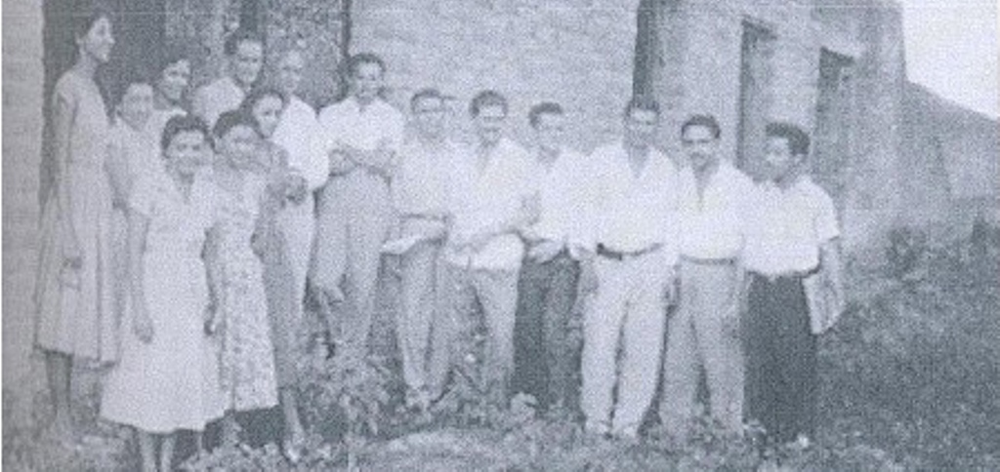

No início da década de 1960, em Goiânia, surgiu uma entidade que transformaria a vivência dos estudantes do norte de Goiás longe de sua terra natal. Em 4 de julho de 1960, foi registrado o Estatuto da Casa do Estudante Norte Goiano (CENOG), que, além de oferecer suporte aos seus membros, desempenhou papel fundamental na mobilização da juventude em favor da criação do Estado do Tocantins.
Embora fundada em Goiânia, a Casa do Estudante Norte Goiano (CENOG) foi idealizada em Pedro Afonso pelo professor Ruy Rodrigues, diretor do Colégio Cristo Rei. Seu objetivo inicial era oferecer moradia e apoio a estudantes do norte de Goiás que migravam para a capital. Rapidamente, a entidade expandiu-se com seccionais em cidades como Porto Nacional, Miracema, Tocantínia e Gurupi.
O primeiro presidente foi o estudante de Filosofia Vicente de Paula Leitão, amigo do padre Ruy. Com sua partida para o Rio de Janeiro durante o mandato, assumiu a presidência o vice, José Cardeal dos Santos, que relembra com entusiasmo os congressos promovidos pela CENOG — incluindo um memorável em Pedro Afonso, que contou com a presença de Pedro Ludovico, fundador de Goiânia, acompanhando seu filho Mauro Borges, então governador de Goiás.
A historiadora Jucyléia Santana dos Santos, em O Sonho de uma Geração, destacou que o abandono histórico da região pelas autoridades goianas alimentou entre os moradores o sentimento de que apenas a separação garantiria o desenvolvimento do norte. Através da CENOG, os estudantes buscaram despertar a consciência popular, reivindicando educação, cultura, lazer e políticas públicas para a região.
